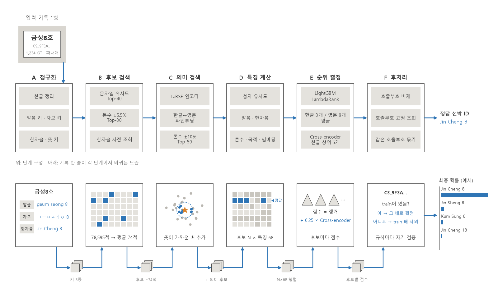
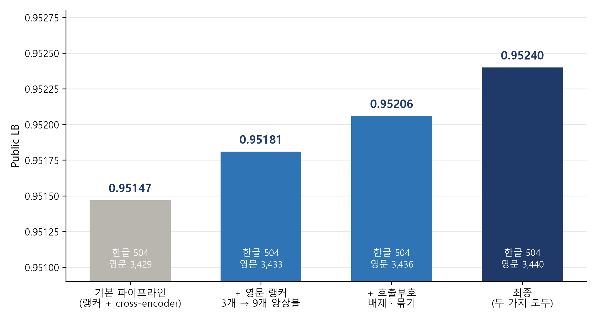
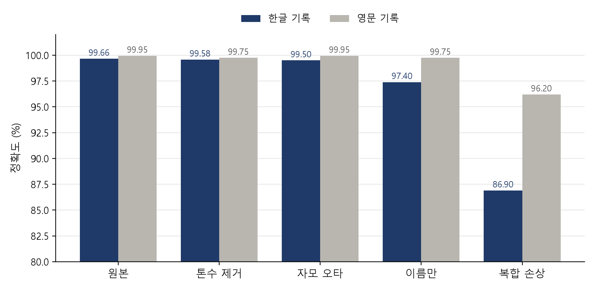

항만에 들어오는 배의 입출항 기록에는 선박명, 호출부호, 톤수, 국적이 적혀 있습니다. 이 기록이 선박 명부의 어떤 배인지 정확히 이어 주어야 입출항 이력을 배 단위로 관리할 수 있습니다.
문제는 명부에는 영문 이름만 있는데, 기록의 선박명은 한글로 적힌 경우가 많고 그 표기 방식도 제각각이라는 점입니다.
| 기록의 선박명 | 명부의 선박명 | 표기 방식 |
|---|---|---|
| 케이엠티씨 선전 | KMTC Shenzhen | 약어와 지명을 소리대로 |
| 금성 (예시) | Jin Cheng | 중국 선박명을 한자음으로 |
| 해풍 (예시) | Sea Wind | 뜻을 번역해서 |
| GRAND VICCTORY | GRAND VICTORY | 영문 오타 |
본 연구의 목표는 이처럼 표기가 다양한 기록 한 줄을 보고, 78,595척의 명부에서 같은 배를 찾는 모델을 만드는 것입니다.
| 데이터 | 규모 | 내용 |
|---|---|---|
| train | 12,222행 | 한글 기록 1,191행(9.7%), 고유 선박 5,851척 |
| catalog | 78,595척 | 영문 선박명, 톤수, 국적, 선종 |
| test | 4,100행 | 한글 532행, 영문 3,568행 (점수에서 역산) |
명부 전체를 정밀하게 비교하는 대신, 가벼운 방법으로 후보를 먼저 추리고 학습한 모델이 후보의 순위를 매기는 검색 → 재순위(retrieve → rerank) 구조로 설계했습니다.

그림 1. 단계 구성(위)과 기록 한 줄이 각 단계에서 바뀌는 모습(아래, 가상 예시)
한글 기록이 1,191행뿐이라 자모 오타·띄어쓰기·톤수 결측을 일부러 만들고, Qwen2.5-7B로 train 선박명을 다섯 가지 방식(소리, 한자음, 뜻, 혼합, 줄임)의 한글로 다시 써서 학습에 추가했습니다.
같은 배가 학습과 검증에 함께 들어가지 않도록 선박 단위 GroupKFold(5)로 검증했습니다. 신경망과 보조 사전도 fold마다 따로 만들어 정보가 새지 않게 했습니다.
# 랭커 점수에 한글 기록만 cross-encoder 점수를 더함 (vessel_lib.py)
sc = self.booster.predict(X)
if CE is not None and q.hangul and len(cands) > 1:
top = np.argsort(-sc, kind="stable")[:CE_TOP] # 상위 5척
sc[top] += CE_W * CE.score(row.get("vessel_name"), self.idx.names[cands[top]])
최종 Public LB 0.95240 (한글 504/532, 영문 3,440/3,568)

그림 2. 구성 요소를 더할 때마다의 Public LB. 정답 수는 평가식으로 역산했습니다.
로컬 검증은 0.99를 넘었지만 LB는 그보다 낮았습니다. 원인을 찾기 위해 검증 기록에 손상을 일부러 넣고 다시 채점했습니다(개발 중 버전 기준).

그림 3. 손상 조건별 정확도. 정보가 여러 개 동시에 손상되면 한글 정확도가 크게 떨어집니다.